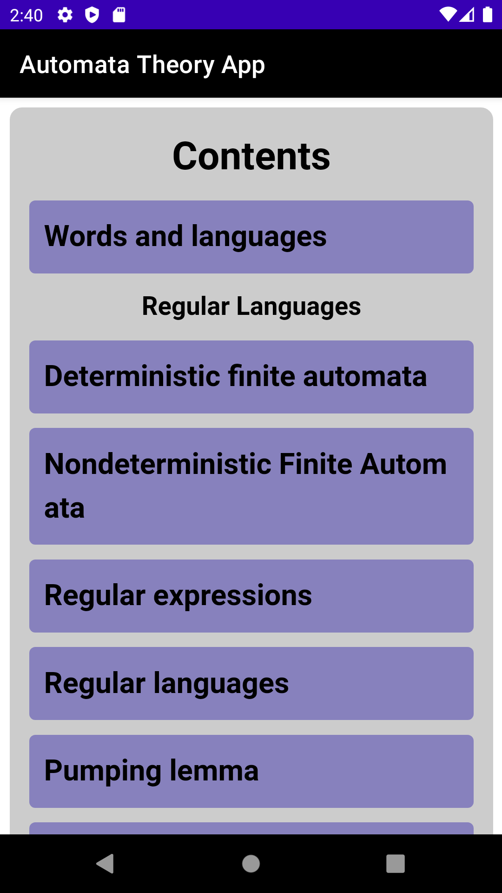

FAQ
Once Automata Theory App is installed and opened the following screen is shown

The user has the following options:
- Scrool on the "Home Screen" in order to read general information about Automata Theory App. The user can go back to the home screen by tapping on the "Home Screen" button on the top middle part.
- Tap the on the top left icon
 to access the contents of the application. Here you see the list of subjects and you can navigate through
all of them, each submenu has a back button at the end that takes you back to the previous menu.
to access the contents of the application. Here you see the list of subjects and you can navigate through
all of them, each submenu has a back button at the end that takes you back to the previous menu.
Tap the on the top left icon  and then tap on the last item: Exercises.
There you can pick the section, then a specific subject and then the list of exercises for that subject will be displayed.
Then simply tap on an exercise to show its solution.
and then tap on the last item: Exercises.
There you can pick the section, then a specific subject and then the list of exercises for that subject will be displayed.
Then simply tap on an exercise to show its solution.